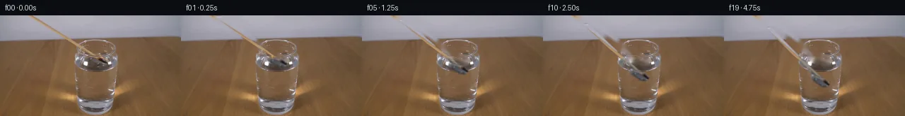

![首帧]()

Round 00
2026-11-05T03:12:11.304379+00:00像素候选变化代码 +197/−0inspection 更新
pixels 58fe78b6a6f5e6eb · code a96b2565eba9d52a
查看本轮 generate.py 真实 diff
--- previous/generate.py +++ current/generate.py @@ -0,0 +1,197 @@ +#!/usr/bin/env python3 +"""Generate the 20-frame locked-camera match-in-water continuation.""" + +from pathlib import Path + +import cv2 +import numpy as np +from PIL import Image, ImageDraw + +import artifact_io + + +ROOT = Path(__file__).resolve().parent +W, H = 256, 144 + + +def alpha_composite(base, premul, alpha): + """Composite a premultiplied RGB layer over an RGB image.""" + return base.astype(np.float32) * (1.0 - alpha[..., None]) + premul + + +def make_match_layers(source): + """Extract the match and make a clean fixed background by local inpainting.""" + mask = np.zeros((H, W), np.uint8) + + # The narrow wood shaft follows the measured center line. AA retains the + # very soft source edge; the head polygon includes its black and ember area. + cv2.line(mask, (45, -5), (132, 59), 255, 4, cv2.LINE_AA) + head = np.array([(121, 56), (128, 55), (139, 59), (148, 65), + (145, 70), (137, 70), (127, 65), (120, 60)], np.int32) + cv2.fillPoly(mask, [head], 255, cv2.LINE_AA) + + # A very small feather avoids a hard cutout boundary without moving the + # match texture off its original pixels. + alpha = cv2.GaussianBlur(mask.astype(np.float32) / 255.0, (3, 3), 0.45) + alpha = np.clip(alpha, 0.0, 1.0) + premul = source.astype(np.float32) * alpha[..., None] + + erase = cv2.dilate(mask, np.ones((5, 5), np.uint8), iterations=1) + # TELEA reconstruction is confined to the thin moving-object footprint. + clean = cv2.inpaint(source, erase, 4, cv2.INPAINT_TELEA) + + # The large head overlaps complicated glass reflections. Blend a little + # undisturbed water texture from immediately below into the reconstructed + # patch to avoid an artificial flat black remnant. + patch_mask = np.zeros((H, W), np.float32) + cv2.ellipse(patch_mask, (136, 63), (17, 10), 0, 0, 360, 1.0, -1, + cv2.LINE_AA) + patch_mask *= (erase.astype(np.float32) / 255.0) + patch_mask = cv2.GaussianBlur(patch_mask, (7, 7), 1.5)[..., None] * 0.34 + shifted = np.roll(clean, 7, axis=0) + clean = clean.astype(np.float32) * (1.0 - patch_mask) + shifted * patch_mask + return np.clip(clean, 0, 255).astype(np.uint8), premul, alpha + + +def transform_match(premul, alpha, angle_deg): + """Pivot match clockwise around an off-screen point and refract underwater part.""" + matrix = cv2.getRotationMatrix2D((-50.0, 80.0), angle_deg, 1.0) + moved_p = cv2.warpAffine(premul, matrix, (W, H), flags=cv2.INTER_CUBIC, + borderMode=cv2.BORDER_CONSTANT, borderValue=0) + moved_a = cv2.warpAffine(alpha, matrix, (W, H), flags=cv2.INTER_CUBIC, + borderMode=cv2.BORDER_CONSTANT, borderValue=0) + moved_a = np.clip(moved_a, 0.0, 1.0) + + yy, xx = np.mgrid[:H, :W] + # Curved upper water boundary: lowest toward the near/outer parts. + surface = 59.2 + 0.0026 * (xx - 136.0) ** 2 + underwater = np.clip((yy - surface + 1.0) / 3.0, 0.0, 1.0) + + above_a = moved_a * (1.0 - underwater) + above_p = moved_p * (1.0 - underwater[..., None]) + + under_a = moved_a * underwater + under_p = moved_p * underwater[..., None] + + # The cylindrical glass displaces the submerged image slightly toward the + # center. Blur and cool/desaturate it as viewed through water and glass. + shift = np.float32([[1, 0, 0.9], [0, 1, 0.35]]) + under_a = cv2.warpAffine(under_a, shift, (W, H), flags=cv2.INTER_LINEAR, + borderMode=cv2.BORDER_CONSTANT, borderValue=0) + under_p = cv2.warpAffine(under_p, shift, (W, H), flags=cv2.INTER_LINEAR, + borderMode=cv2.BORDER_CONSTANT, borderValue=0) + under_a = cv2.GaussianBlur(under_a, (3, 3), 0.48) + under_p = cv2.GaussianBlur(under_p, (3, 3), 0.48) + straight = np.divide(under_p, np.maximum(under_a[..., None], 1e-5)) + gray = (0.299 * straight[..., 0] + 0.587 * straight[..., 1] + + 0.114 * straight[..., 2]) … diff truncated; 110 more lines …